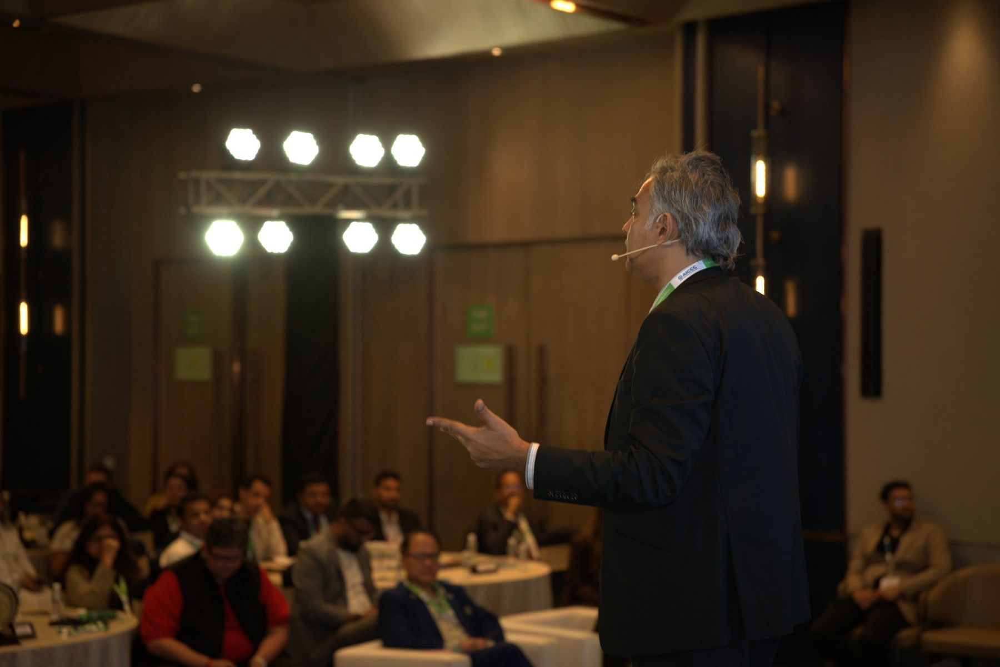
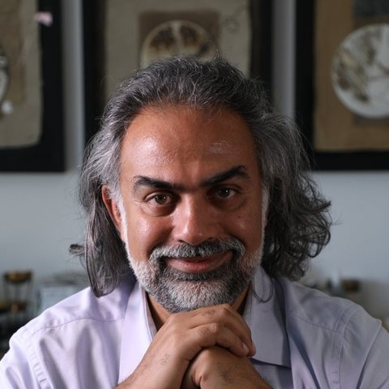
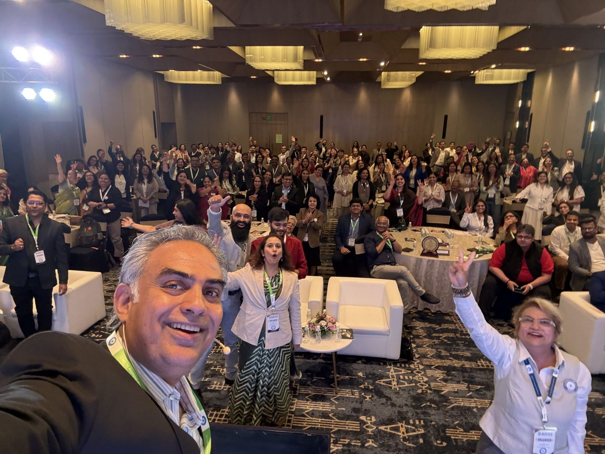
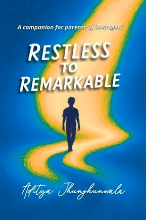
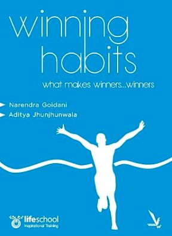

For counsellors and educators
Change the question.
A toolkit for the conversations that decide a young person's next three years: nine tools, each with a short video and a printable template, built from twelve years of work with students and their families.
- IIM AhmedabadPGDBM, 2002
- 2 booksRestless to Remarkable and Winning Habits
- 2 TEDx talksPune: “A college of life learning.”
Goa: “Why everyone should create a body of work” - 1,000+young people mentored over 12 years

Why a toolkit
The question has changed.
For thirty years, parents asked
Which college will accept my child?
Today, families are asking
In three years, what will I be able to do? How much will I earn? What kind of life will I have?
Rankings and college lists answer the old question. Few tools exist for the new one. In ten years of asking founders and CEOs what they look for in a fresher, not one has said “degree.”
of job postings that dropped a degree requirement actually hired someone without a degree. The floor is still very real.
Source 1: Burning Glass Institute and OneTen, Feb 2026
of IIT Guwahati students who registered for campus placement in 2025-26 were not placed: 1,004 of 1,592 got a job. If an IIT seat no longer guarantees the next step, no college brand does.
Source 2: IIT Guwahati placement report 2025-26
career counsellors registered on the National Career Service portal. CBSE's own rule of one counsellor per 500 students means Classes 9 to 12 alone need about 1.3 lakh. The families who reach you are the lucky few. Every conversation you have carries more weight than the system admits.
Source 3: Lok Sabha reply, Jan 2026; CBSE bye-laws Cl. 2.4.12; UDISE+ 2024-25
Degree is no longer the aspiration. Degree is now the floor.
The toolkit
Nine tools, in the order of a real conversation.
Each one runs on paper, in one sitting, with one family or a whole class. Each ends in a question the student answers, not advice they receive.
Each tool comes with a short video and a printable template.
Tools 1 and 2
Open
The 1,095-day swap
Three years, in hoursWhen a parent asks “which college?”, change the question to how 17,520 waking hours will be spent. Class takes about a tenth of them.
How will you spend the next 17,520 waking hours?
Run live on 12 DecGet the vanilla right
The skills under the skillsChocolate ice cream is vanilla with a little sauce. Thinking, analysing, explaining and working with people are the vanilla. Find the proof.
Where is the proof of the skills under the skills?
Tools 3 and 4
Understand
Seventeen years of data
What your story already showsNo test needed. Eight questions for student and parent together reveal the environment this child will thrive in.
What do 17 years of you already tell us?
Five colours of work
The mix you want in a dayDecide, make, meet, support, monitor. Two people with the same title can have completely different days. The mix is the job.
What mix of work do you want in your day?
Tools 5 and 6
Map
Thaali map: four rooms
Who lets you in, and is there a seat?Two questions sort any career into Ladder, Double Gate, Craft or Risk, and show what a student has to get good at in each.
Who lets you in, and is there a seat when you get good?
Run live on 12 DecThree pathways
Mastery, recognition or judgmentSkill, certification or experience. Each pays in a different currency, so each needs a different plan from 18 to 24.
Which currency are you building?
Tools 7 and 8
Decide
The decision funnel
What to say yes to right nowBeginners say yes to everything. Experts earn the right to say no. Selectivity is a reward, not a personality.
What should you be saying yes to right now?
Six questions before a big decision
Haircut or tattoo?For the stuck student facing one heavy choice. Most decisions leave at the first question, because they turn out to be reversible.
Is this a haircut or a tattoo?
Tool 9
Act
The 30-day proof sprint
Something finished in 30 daysTurn “I want to make vlogs” into a number, a format and a date. Quality is born from quantity.
What can you show me, finished, in 30 days?
Run live on 12 DecPlus four bonus cards
- Know, grow, showA simple practice card. Whichever circle is smallest is the one to work on.
- The family conversation cardQuestions for the dinner table, when parent and child are stuck in the same argument.
- Three layers of skillA staff-room sheet on what AI is changing in what schools teach.
- Do you know what to ask the wand?A short room exercise on AI for a class or a parents' meeting.
“The job of a good counsellor is not to give answers. It is to ask the right questions.”
Every tool in the kit is built on that line.Where these tools come from
Twelve years in the room.
None of this started as a framework. It started as conversations with young people who did not fit the path laid out for them, and with the parents who were worried about it. Every tool in the kit has been used live, with students, parents, schools or counsellors.
- Five unpaid yearsrunning a weekly programme for 17 to 21 year olds, before any of this had a name.
- 1,000+ young people mentoredand their families met, one conversation at a time.
- Two TEDx talkson lifelong learning and on building a body of work, and the book Restless to Remarkable.
- Sessions with school, education and industry leadersacross the country, and the keynote at AICCC 2026, the All India Convention of Career Counsellors.

Aditya JhunjhunwalaIIM Ahmedabad, MIT Pune engineering. Co-founder of Let's Enterprise, which runs India's first Working BBA.
Leadership work with teams at
- Red Hat
- Secure Meters
- Stahl
- The Kalyani School

Books

Restless to RemarkableA companion for parents of teenagersFor the young person who knows they are capable of more but hasn't found the door yet, and the parent trying to help without getting in the way.
Winning HabitsWhat makes winners... winners. With Narendra GoidaniA practical guide to the habits that build lasting success.Start with three of them, live.
Join the next free live session on Saturday 12 December, 10:00 to 11:30 am IST. We run three of these tools live on real student cases, and everyone who registers gets the recording and printable templates for those three.
Sources
- Degree-requirement removals vs actual non-degree hires: Burning Glass Institute and OneTen, February 2026.
- Campus placement, all programmes, 2025-26: 1,592 registered, 1,004 placed (63%). Centre for Career Development, IIT Guwahati, Placement Report 2025-26.
- Career counsellors on the NCS portal: Lok Sabha reply, January 2026. CBSE counsellor ratio: Affiliation bye-laws Clause 2.4.12, amended 19 January 2026. Students in Classes 9 to 12: UDISE+ 2024-25.
- Waking hours: 3 years x 365 days x 16 hours = 17,520. Class time: 1 credit = 15 contact hours (UGC/AICTE norms), about 1,800 hours for a 3-year degree.